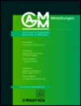

| G. Leugering, P. Benner, S. Engell, A. Griewank, H. Harbrecht, M. Hinze, R. Rannacher, S. Ulbrich (editors) Trends in PDE Constrained Optimization Springer (2014) |
|
| A. Borzi, V. Schulz Computational Optimization of Systems Governed by Partial Differential Equations SIAM (2012) |
|

|
G. Leugering, S. Engell, A. Griewank, M. Hinze, R. Rannacher, V. Schulz, M. Ulbrich, S. Ulbrich (editors) Constrained Optimization and Optimal Control for Partial Differential Equations Birkhäuser (2012) |
| M. Ulbrich Semismooth Newton Methods for Variational Inequalities and Constrained Optimization Problems in Function Spaces SIAM (2011) |
|
|  | M. Hinze, V. Schulz (editors) GAMM Reports 33(2) Wiley (2010) |
| M. Hinze, R. Pinnau, M. Ulbrich, S. Ulbrich Optimization with PDE Constraints Springer (2009) |